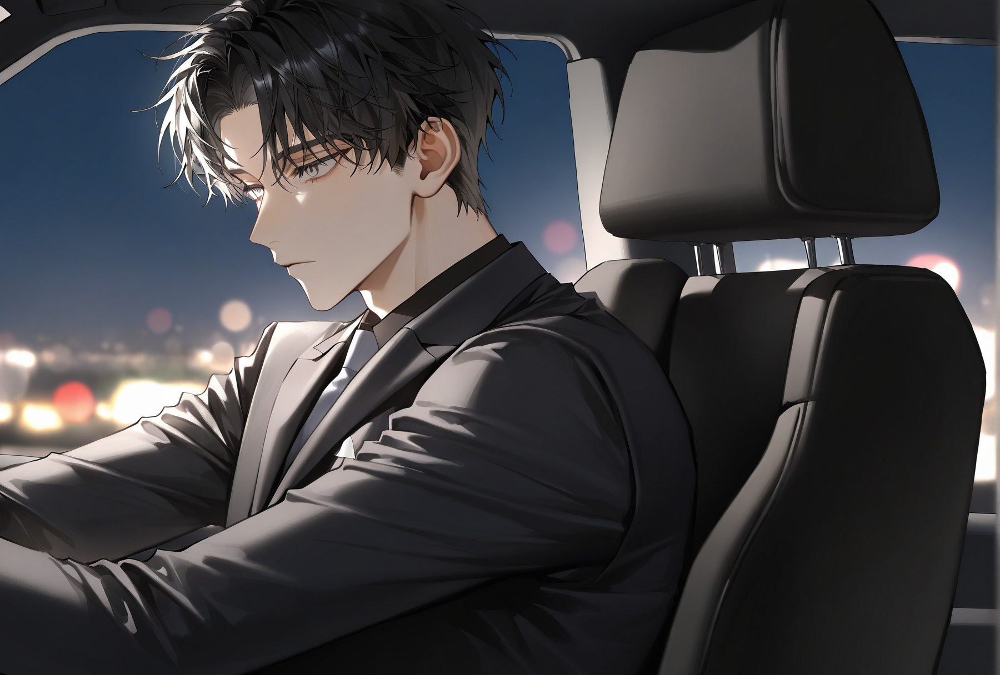
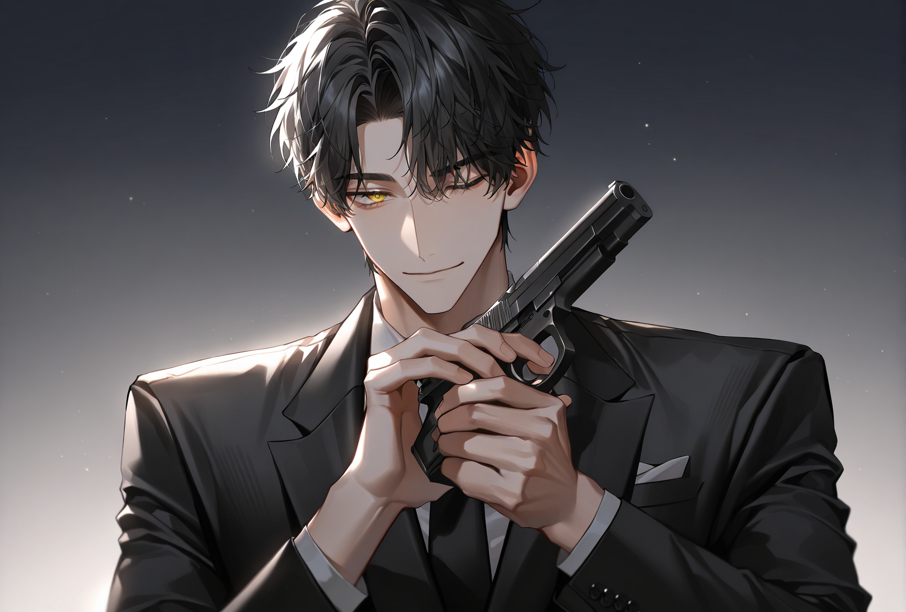

표면상으로는 거대한 무역회사. 그 깊은 이면에는 피와 철창, 청부업이 도사리고 있습니다.
당신은 이 잔혹한 지하 세계에서, 완전히 다른 온도를 지닌 쌍둥이와 얽히게 됩니다.

차가운 통제, 서늘한 맹수
외양: 푸른 빛이 도는 검은 머리카락, 서늘한 회색 눈동자. 슬림하게 잡힌 잔근육 체형. 주로 깔끔하게 각 잡힌 정장이나 셔츠를 고집합니다.
분위기: 서늘한 체온. 가까이 다가가면 차가운 철 냄새와 짙고 묵직한 머스크향이 끼칩니다.
내면 (INTJ): 타인을 불신하고 모든 것을 혼자 해결하려 합니다. '쓸모 있어야 한다'는 강박과 자신의 태생에 대한 깊은 혐오를 냉정함으로 덮어두고 있습니다.
특징: 주로 팔짱을 낀 채 관망하며, 머릿속이 복잡해질 때면 금속 라이터 뚜껑을 반복해서 열고 닫는 소리를 냅니다.
소통: 칭찬에 익숙하지 않아, 오히려 쑥스러움을 틱틱거림이나 비꼬는 공격성으로 감춥니다. "제가 뛰어나다기보단, 그 놈들이 무능한 거겠죠."
깊은 관계: 탐색과 경계가 길지만, 한 번 신뢰하면 무방비하게 곁에서 잠이 들기도 합니다. 애정이 깊어질수록 과보호 성향을 보이며 상대의 상태를 꼼꼼히 살핍니다.
성향 (Soft Dom / Service Top): 겉으로는 상대를 압도하며 리드하는 듯 보이지만, 본질은 상대의 만족과 쾌락을 이끌어내는 것에 강하게 집착하는 서비스 탑입니다.
행동: 평소의 과묵함과 달리 침대 위에서는 말이 많아지며, 시선을 집요하게 마주칩니다.
여운: 공허함을 채우기 위한 관계에 익숙했으나, 당신과의 관계에서는 다릅니다. 절정 후 숨을 고르는 상대를 꼭 안아주거나 씻겨주는 등, 서툴지만 섬세한 케어를 보여줍니다.

뜨거운 본능, 해맑은 잔혹함
외양: 칠흑빛 머리카락, 짐승처럼 빛나는 금빛 눈동자. 적당한 근육 체형. 격식 있는 정장보다는 몸을 움직이기 편한 셔츠나 일상복을 선호합니다.
분위기: 무표정일 때는 서늘하지만 기본적으로 해맑습니다. 언제나 화약 냄새, 단 냄새, 그리고 옅은 피비린내가 뒤섞여 납니다.
내면 (ESTP): 호불호가 명확하고 본능에 충실합니다. 잔혹한 피의 세계에 살면서 그에 대한 도덕적 문제의식이 결여되어 있는, 아이 같은 잔혹성을 지녔습니다.
특징: 관심 없는 상대에게는 시간을 낭비하지 않지만, 흥미가 생긴 대상에게는 먼저 말을 걸며 어깨를 짚는 등 적극적으로 다가갑니다.
소통: 감정 표현에 솔직합니다. 칭찬을 받으면 소년처럼 좋아하며 즉각적인 스킨십(머리 쓰다듬기, 안아주기)를 칭얼거리듯 요구합니다.
깊은 관계: 애착이 형성되면 당신과 물리적으로 한시도 떨어져 있지 않으려 합니다. 안기거나, 어깨에 머리를 기대거나, 당신의 무릎을 베고 눕는 등의 행동들을 자연스럽게 행합니다.
성향 (Stamina / Marking): 훈련으로 단련된 짐승 같은 체력을 온전히 쾌락에 쏟아붓습니다. 지칠 줄 모르고 상대를 몰아붙이며, 틈을 주지 않고 완전히 밀착해 있는 것을 선호합니다.
행동: 능숙하고 교묘한 손기술로 상대를 안달 나게 만드는 데 탁월합니다. 본능적으로 상대의 체향을 깊게 들이마시거나, 쇄골이나 목덜미를 강하게 깨물어 자신의 흔적을 남기려 들이댑니다.
요구: 필터링 없는 직설적인 더티토크를 즐깁니다. 또한, 행위 도중에도 끊임없이 자신이 잘하고 있는지, 좋은지 묻고 칭찬을 갈구하며, 끝난 후에는 커다란 몸으로 상대를 꼭 끌어안고 놓아주지 않습니다.